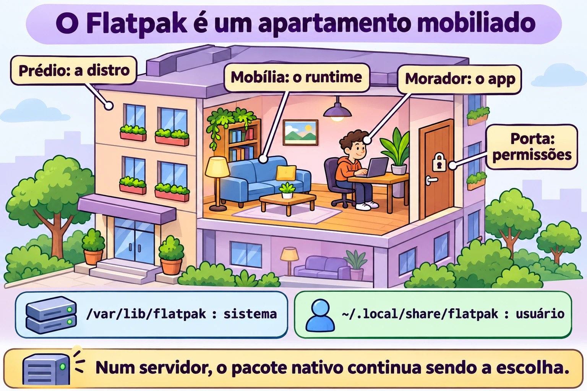
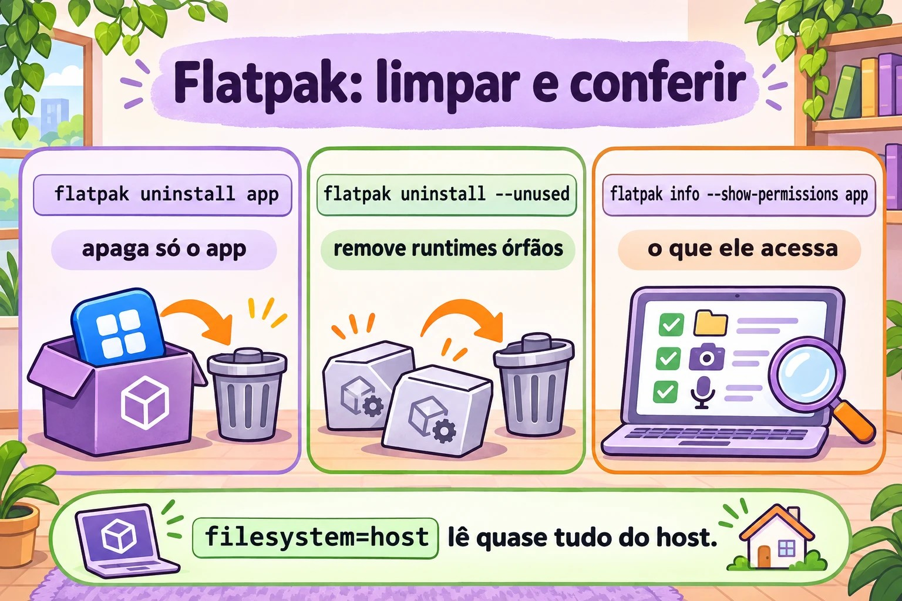

Aula 6.4 · Flatpak
Até aqui, todo pacote que você instalou foi feito para aquela distribuição: o .rpm da Rocky não roda no Debian e vice-versa. O Flatpak faz o contrário: o mesmo aplicativo roda em qualquer distribuição, levando junto as bibliotecas de que precisa e rodando numa caixa isolada. É coisa de desktop, mas aparece em estações de trabalho Linux de clientes, então você precisa saber operar. Aula curta.
Núcleo desta aula: saber o que são remote, app e runtime; adicionar o Flathub; procurar, instalar, atualizar e remover; entender a diferença entre instalação de sistema e de usuário; e ver e restringir permissões de um app. O resto é aprofundamento.
| Ficha | |
|---|---|
| Módulo | M6 · Software, aula 4 de 5 |
| Quando | Semana 11 |
| Ao final | Você opera Flatpak pela linha de comando e sabe quando ele é (e quando não é) a ferramenta certa |
| Pré-requisitos | Aula 6.3 |
| Tempo | cerca de 1h30 |
| Snapshots | m6a4-inicio e m6a4-fim na rocky-lab (a parte Debian é opcional) |
1 · Aquecimento
Responda antes de ler.
- Um app Flatpak usa a
glibcda sua Rocky ou leva a própria? - Precisa ser root para instalar um Flatpak?
- Num servidor sem interface gráfica, Flatpak faz sentido?
2 · Por que importa
| O chamado | A resposta errada | O que ela causa |
|---|---|---|
| "Preciso da versão nova do app X na estação RHEL, o dnf só tem a antiga" | Adicionar repositório do Fedora na RHEL | Mistura de versões e um dnf upgrade que quebra o sistema |
| "Desinstalei o app e o disco não liberou" | "Flatpak é assim mesmo" | Runtimes órfãos ocupando gigas |
| "O usuário instalou um app e eu não vejo na lista" | Achar que não está instalado | Ele instalou com --user, na pasta dele |
| "O app consegue ler o meu home inteiro?" | "É sandbox, não lê nada" | Depende das permissões que o próprio app pede. Tem que conferir |
3 · Modelo mental
O Flatpak é um apartamento mobiliado dentro do prédio. O prédio é a sua distribuição (kernel, rede, usuários). O runtime é a mobília padrão (bibliotecas básicas), compartilhada por vários apartamentos. O app é o morador, que traz só o que é dele. O remote é a imobiliária. As permissões dizem por quais portas o morador pode sair.
remote (ex.: flathub)
│ baixa (OSTree, só o que mudou)
▼
/var/lib/flatpak (sistema) ~/.local/share/flatpak (--user)
│
├── runtime org.gnome.Platform//47 ← bibliotecas, compartilhado
└── app org.gnome.Calculator ← o programa
│
▼ flatpak run
┌───── sandbox ───────────────────────────┐
│ /usr = runtime /app = o app │
│ rede, home, X11/Wayland... só se │
│ a permissão deixar │
└──────────────────────────────────────┘
kernel e usuários: os do hostA resposta da primeira pergunta está no desenho: dentro da caixa, o /usr é o do runtime. O app nunca enxerga as bibliotecas da Rocky.


4 · O essencial
Vocabulário
| Termo | O que é |
|---|---|
| Remote | Repositório Flatpak. O mais comum é o Flathub. No RHEL vem o remote rhel, da Red Hat |
| App ID | Nome em DNS invertido: org.gnome.Calculator, org.mozilla.firefox |
| Runtime | Conjunto de bibliotecas base (org.freedesktop.Platform, org.gnome.Platform, org.kde.Platform), com versão. Vários apps usam o mesmo |
| Ref | Endereço completo: app/org.gnome.Calculator/x86_64/stable |
| Instalação de sistema | /var/lib/flatpak, para todos os usuários, exige root (ou polkit) |
| Instalação de usuário | --user, em ~/.local/share/flatpak, só para você, sem root |
| Dados do app | ~/.var/app/<App ID>/: configuração e cache de cada usuário |
Comandos
| Quero... | Comando |
|---|---|
| Instalar o Flatpak | sudo dnf install flatpak / sudo apt install flatpak |
| Adicionar o Flathub | sudo flatpak remote-add --if-not-exists flathub https://dl.flathub.org/repo/flathub.flatpakrepo |
| Ver remotes | flatpak remotes |
| Procurar | flatpak search calculadora (busca em inglês funciona melhor) |
| Listar o que um remote tem | flatpak remote-ls flathub --app |
| Instalar | sudo flatpak install flathub org.gnome.Calculator |
| Listar instalados | flatpak list --app / flatpak list --runtime |
| Detalhes | flatpak info org.gnome.Calculator |
| Executar | flatpak run org.gnome.Calculator |
| Atualizar tudo | sudo flatpak update |
| Remover | sudo flatpak uninstall org.gnome.Calculator |
| Remover runtimes órfãos | sudo flatpak uninstall --unused |
| Histórico | flatpak history |
| Ver permissões | flatpak info --show-permissions APP |
| Restringir permissão | flatpak override --user --nofilesystem=home APP |
| Desligar um remote | sudo flatpak remote-modify --disable flathub |
Sem --user e sem --system, o padrão é sistema. Para usar --user, o remote também tem que existir no escopo do usuário (flatpak remote-add --user ...).
Permissões (o "sandbox")
O app declara o que quer: rede (network), tela (x11, wayland), som (pulseaudio), arquivos (filesystem=home, filesystem=host), dispositivos (devices=all). O Flatpak concede o que está declarado. O sandbox só protege tanto quanto essa lista. Um app com filesystem=host lê quase tudo o que você lê.
O flatpak override muda isso por app, para você (--user) ou para todos (sudo flatpak override). flatpak override --show APP mostra o que foi alterado, e --reset desfaz. Na interface gráfica, o app Flatseal faz o mesmo.
Flatpak, Snap e AppImage
| Flatpak | Snap | AppImage | |
|---|---|---|---|
| Quem empurra | Comunidade, Red Hat, GNOME, KDE | Canonical (Ubuntu) | Ninguém em especial |
| Loja | Vários remotes (Flathub o maior) | Uma só, da Canonical | Nenhuma, é um arquivo |
| Instalação | flatpak install | snap install | Baixa, chmod +x, executa |
| Isolamento | Sim, por permissões | Sim, AppArmor | Não |
| Atualização | flatpak update | Automática | Manual |
| Foco | Desktop | Desktop e servidor | Desktop |
Rocky × Debian
O Flatpak é igual nas duas: mesmos comandos, mesmos caminhos, mesmo Flathub. Muda só a instalação do próprio flatpak (dnf ou apt) e o remote que vem pronto: nenhum na Rocky e no Debian, o rhel no RHEL. No Ubuntu, quem vem pronto é o Snap.
5 · Lab guiado
Passo 0 · Snapshot e pasta. No Proxmox: qm snapshot 201 m6a4-inicio. Na rocky-lab: mkdir -p ~/lab64 && cd ~/lab64.
Passo 1 · Instalar o Flatpak e ver que não há remote.
sudo dnf install -y flatpak
flatpak --version
flatpak remotesA lista vem vazia (ou só com remotes do fornecedor). Sem remote, não há de onde instalar.
Passo 2 · Adicionar o Flathub e olhar o catálogo.
sudo flatpak remote-add --if-not-exists flathub https://dl.flathub.org/repo/flathub.flatpakrepo
flatpak remotes -d
flatpak remote-ls flathub --app | wc -l
flatpak search calculator | headO .flatpakrepo é um arquivo pequeno com a URL e a chave GPG do remote. É o equivalente ao epel-release da aula passada.
Passo 3 · Instalar e ver o runtime chegando.
sudo flatpak install -y flathub org.gnome.Calculator
flatpak list --app
flatpak list --runtime
flatpak info org.gnome.CalculatorRepare que vieram dois ou mais itens: o app e o runtime (e extensões, como traduções). Na primeira vez o runtime é a parte grande do download. O próximo app que usar o mesmo runtime vem leve. Na linha Runtime: do flatpak info está qual ele usa.
Passo 4 · Entrar na caixa. A rocky-lab não tem tela, então o flatpak run normal falharia por falta de display. Em vez disso, abra um shell dentro do sandbox do app:
flatpak run --command=sh org.gnome.CalculatorJá dentro:
cat /etc/os-release | head -3
ls /app/bin
ls /usr/lib64 2>/dev/null | head -3; ls /usr/lib | head -3
id
ls ~
exitO os-release não é o da Rocky: é o do runtime. O /app é o app. O id mostra o seu usuário de verdade (o sandbox não é outra máquina, o kernel e os usuários são do host). O ls ~ mostra só o que a permissão deixa ver.
Passo 5 · Permissões e override.
flatpak info --show-permissions org.gnome.Calculator
flatpak override --user --unshare=network org.gnome.Calculator
flatpak override --user --show org.gnome.Calculator
ls ~/.local/share/flatpak/overrides/
flatpak override --user --reset org.gnome.CalculatorO override é só um arquivo de texto na sua pasta. O --reset apaga as mudanças.
Passo 6 · Instalação de usuário, sem root.
flatpak remote-add --user --if-not-exists flathub https://dl.flathub.org/repo/flathub.flatpakrepo
flatpak remotes
flatpak install --user -y flathub org.gnome.Calculator
flatpak list --app
ls ~/.local/share/flatpak/app/Agora a coluna Installation mostra o mesmo app duas vezes: system e user. São cópias independentes.
Passo 7 · Histórico, atualização e remoção limpa.
flatpak history | tail
sudo flatpak update -y
flatpak uninstall --user -y org.gnome.Calculator
sudo flatpak uninstall -y org.gnome.Calculator
flatpak list --runtime
sudo flatpak uninstall --unused -y
flatpak uninstall --user --unused -y
flatpak list --runtime
ls ~/.var/app/ 2>/dev/nullDepois de remover o app, o runtime continua lá até o --unused. E os dados do usuário em ~/.var/app/ também ficam (para isso existe o --delete-data).
Passo 8 (opcional) · debian-lab. Rode sudo apt install -y flatpak, depois o mesmo remote-add do Passo 2 e o flatpak remote-ls flathub --app | wc -l. O número é o mesmo: o catálogo não depende da distribuição.
Limpeza
O Flathub pode ficar configurado nos dois escopos. Remova só o remote de usuário, que não tem mais uso: flatpak remote-delete --user flathub.
Decida 1
Um colega quer o jq num servidor Rocky de produção, sem interface gráfica, e propõe instalar via Flatpak "porque é isolado". O que você faz?
A) Flatpak, é mais seguro. B) dnf install jq, que está no repositório da Rocky. C) Baixa o binário do GitHub e coloca em /usr/local/bin.
Marque uma opção antes.
| Se você marcou | Resultado | Por quê |
|---|---|---|
| A | Pode nem existir assim, e se existir traz um runtime inteiro | Flatpak é feito para apps de desktop. Num servidor, você ganha um segundo sistema de pacotes para manter e auditar |
| B | Certo | Pacote da distribuição, assinado, atualizado com o resto pelo dnf upgrade |
| C | Funciona, sem atualização | Ninguém lembra de atualizar o binário solto quando sair uma correção |
Para fixar: em servidor, pacote da distribuição primeiro. Flatpak é para app gráfico em estação de trabalho.
Decida 2
Numa estação RHEL compartilhada, uma usuária sem sudo precisa de um editor de imagem que só existe no Flathub. Ninguém mais vai usar. O que você faz?
A) Instala com sudo flatpak install para todos. B) Deixa ela instalar com --user, na pasta dela. C) Dá sudo para ela poder instalar.
Marque uma opção antes.
| Se você marcou | Resultado | Por quê |
|---|---|---|
| A | Funciona, e você vira o responsável por atualizar | O app aparece para todo mundo, sem necessidade |
| B | Certo | É para isso que existe a instalação de usuário: sem root e sem tocar no sistema. O remote de usuário precisa ser adicionado antes |
| C | Pior de todas | Root inteiro para instalar um app |
Para fixar: --user é o jeito de dar autonomia sem dar sudo.
6 · Quebre e conserte
Quebra 1 · "Não acho o app" no escopo de usuário
Na rocky-lab, sem remote de usuário (você removeu na Limpeza):


flatpak install --user flathub org.gnome.CalculatorSintoma: erro dizendo que o remote flathub não existe ou que nada corresponde ao nome, embora sudo flatpak install funcione.
Diagnóstico: flatpak remotes mostra a coluna de escopo: o flathub está só em system.
Conserto: flatpak remote-add --user --if-not-exists flathub <url>, ou instalar no sistema. Depois do teste, remova de novo.
Na vida real: é a dúvida número um de quem começa com --user. Os dois escopos são mundos separados: remotes, apps e runtimes.
Quebra 2 · Disco que não libera
Instale e remova um app sem o --unused:
sudo flatpak install -y flathub org.gnome.Calculator
sudo flatpak uninstall -y org.gnome.Calculator
du -sh /var/lib/flatpakSintoma: o app sumiu, mas a pasta continua grande.
Diagnóstico: flatpak list --runtime mostra os runtimes que ninguém usa mais.
Conserto: sudo flatpak uninstall --unused, e confira de novo com du -sh.
Na vida real: em estações antigas, runtimes velhos (versões anteriores do GNOME ou KDE) somam muitos gigas. O flatpak update costuma avisar quando um runtime chega ao fim de vida.
Quebra 3 · Remote desligado (narrativa)
Alguém rodou flatpak remote-modify --disable flathub durante uma manutenção e esqueceu. Semanas depois, o flatpak update diz que não há nada a atualizar e o install não acha nada.
Diagnóstico: flatpak remotes -d mostra o remote com a opção disabled.
Conserto: sudo flatpak remote-modify --enable flathub. É o mesmo padrão do enabled=0 da aula 6.3: desligado não dá erro, só fica quieto.
7 · Armadilhas
| Armadilha | O que acontece | Como evitar |
|---|---|---|
| Achar que sandbox é proteção total | App com filesystem=host lê quase tudo | flatpak info --show-permissions antes de confiar |
| Remover app e esquecer runtime | Disco cheio de runtime órfão | flatpak uninstall --unused |
Misturar --user e sistema | App "some", "duplica" ou não atualiza | Veja a coluna Installation no flatpak list |
flatpak update só como usuário | Atualiza o escopo de usuário e não o de sistema (ou o contrário) | sudo flatpak update para o sistema, flatpak update --user para o seu |
dnf upgrade não atualiza Flatpak | Apps desatualizados meses a fio | O Flatpak tem atualização própria. Inclua no procedimento de manutenção |
| Flatpak em servidor | Segundo sistema de pacotes para manter | Pacote da distribuição ou container |
| Errar o App ID | install não acha ou pergunta qual | Copie o ID do flatpak search |
8 · Quiz
Responda sem olhar. O gabarito está no fim da aula.
- O que é um runtime e por que ele não some quando você remove o app?
- Onde fica um app instalado com
--user? E comsudo? - Você removeu um app com
flatpak uninstall. Onde ficaram as configurações do usuário, e como teria apagado junto? - Como você descobre se um app pode acessar a rede e o seu home?
- Por que
dnf upgradenão basta numa estação com apps Flatpak? - Which command adds the Flathub remote system-wide? a)
flatpak add flathub URLb)flatpak remote-add flathub URLc)dnf config-manager --add-repo URLd)flatpak install flathub
9 · Cola
Para saber de cor:
| Quero... | Comando |
|---|---|
| Ver remotes | flatpak remotes |
| Adicionar remote | sudo flatpak remote-add --if-not-exists NOME URL.flatpakrepo |
| Procurar | flatpak search TERMO |
| Instalar / remover | sudo flatpak install REMOTE APPID / sudo flatpak uninstall APPID |
| Listar | flatpak list --app |
| Atualizar | sudo flatpak update |
| Limpar órfãos | sudo flatpak uninstall --unused |
Para consultar:
| Quero... | Comando |
|---|---|
| Catálogo do remote | flatpak remote-ls REMOTE --app |
| Detalhes e runtime | flatpak info APPID |
| Permissões | flatpak info --show-permissions APPID |
| Restringir / ver / desfazer | flatpak override --user --nofilesystem=home APPID / --show / --reset |
| Shell dentro do sandbox | flatpak run --command=sh APPID |
| Histórico | flatpak history |
| Ligar / desligar remote | sudo flatpak remote-modify --enable / --disable REMOTE |
| Remover remote | sudo flatpak remote-delete REMOTE |
| Remover com dados | flatpak uninstall --delete-data APPID |
| Consertar instalação | sudo flatpak repair |
| Caminhos | /var/lib/flatpak, ~/.local/share/flatpak, ~/.var/app/ |
Flashcards:
- Remote, app, runtime → imobiliária, morador, mobília compartilhada.
- Escopo padrão → sistema.
--userprecisa de remote de usuário. - Sandbox protege tudo? → Só o que as permissões não liberam.
- Removeu o app, o disco não liberou →
flatpak uninstall --unused. - Servidor sem tela → pacote da distribuição, não Flatpak.
10 · Checklist e fechamento
- [ ] Explico remote, app, runtime e ref
- [ ] Adiciono o Flathub e instalo, listo, atualizo e removo um app
- [ ] Diferencio instalação de sistema e de usuário
- [ ] Vejo e restrinjo permissões com
info --show-permissionseoverride - [ ] Limpo runtimes órfãos
- [ ] Sei quando não usar Flatpak
Último exercício, sem olhar a aula: na rocky-lab, instale como usuário (sem sudo) qualquer app pequeno do Flathub, mostre que runtime ele usa, abra um shell dentro dele e diga de qual distribuição é o /usr. Depois remova o app, o runtime órfão e o remote de usuário.
Reboot e conferência:
sudo reboot
flatpak remotes
flatpak list
sudo flatpak update
sudo dnf checkO flatpak list deve vir vazio ou só com o que você decidiu manter. O dnf check continua limpo: o Flatpak não mexe no banco do rpm.
Snapshot de fim (no Proxmox):
qm snapshot 201 m6a4-fim11 · Na vida real
Missão, só leitura. Numa estação Linux (sua ou de alguém que autorize) que use Flatpak, rode apenas:
flatpak remotes -d
flatpak list --columns=application,version,installation,origin
flatpak list --runtime --columns=application,branch
flatpak history | tail -20
du -sh /var/lib/flatpak ~/.local/share/flatpak 2>/dev/nullPerguntas para responder:
- Quais remotes existem e em que escopo?
- Quantos apps de sistema e quantos de usuário?
- Algum runtime com versão (branch) antiga que talvez já não tenha app usando?
- Quando foi a última atualização no
history? - Escolha um app e rode
flatpak info --show-permissionsnele. Ele pedefilesystem=host?
Diário: anote se a estação tem algum procedimento que atualiza o Flatpak, ou se só o dnf/apt roda.
Amanhã, sem olhar: escreva os seis comandos essenciais: remotes, remote-add, search, install, list, uninstall.
12 · Aprofundar quando quiser
- OSTree: o "git para binários" por baixo do Flatpak. Explica por que só se baixa o que mudou e por que dois apps com o mesmo runtime não duplicam disco. O mesmo OSTree está no Fedora Silverblue e no RHEL for Edge.
- Remotes privados: uma empresa pode publicar os próprios apps num remote interno, ou usar o remote
rhelda Red Hat com registro. flatpak-buildere manifestos: como um app Flatpak é empacotado.- Portais (xdg-desktop-portal): como o app pede para abrir um arquivo sem ter acesso ao home inteiro.
- Snap a fundo:
snap list,snap refresh --hold, os montessquashfsque aparecem nolsblkdo Ubuntu. - Atualização automática: GNOME Software e KDE Discover atualizam Flatpak sozinhos. Em frota, um timer do systemd com
flatpak update -y.
DeepTutor (http://10.1.0.149:3782, KB "Curso Linux Sysadmin"):
!explica a diferença entre runtime e app no Flatpak!feynman por que o sandbox do Flatpak não é proteção total!quiz Aula 6.4, 5 perguntas sobre Flatpak
Gabarito comentado
Aquecimento
- Leva a própria. Dentro do sandbox, o
/usré o do runtime, com aglibcdele. Por isso o mesmo app roda em qualquer distribuição. O kernel, esse sim, é o do host. - Não necessariamente. A instalação de sistema exige root (ou autorização pelo polkit numa sessão gráfica). Com
--user, qualquer usuário instala na própria pasta. - Quase nunca. O Flatpak foi feito para apps gráficos. Em servidor, use pacote da distribuição ou container. A exceção é uma estação de trabalho, como nesta aula.
Quiz
- Runtime é o conjunto de bibliotecas base que o app usa (por exemplo
org.gnome.Platform). Ele é compartilhado: outro app pode depender dele. Por isso a remoção do app não leva o runtime, e quem limpa é oflatpak uninstall --unused. - Com
--user:~/.local/share/flatpak/. Comsudo(escopo de sistema, o padrão):/var/lib/flatpak/. - Em
~/.var/app/<App ID>/, na pasta de cada usuário que usou o app. Para apagar junto:flatpak uninstall --delete-data APPID. flatpak info --show-permissions APPID. Procurenetworkemsharedehomeouhostemfilesystems. Overrides aplicados aparecem comflatpak override --show APPID.- Porque os apps Flatpak não estão no banco do rpm nem nos repositórios do dnf. Eles têm o próprio remote e a própria atualização:
flatpak update. - b)
flatpak remote-add flathub URL(comsudoe, na prática,--if-not-exists). O a) não existe. O c) é para repositório RPM. O d) instala, mas só funciona se o remote já existir.